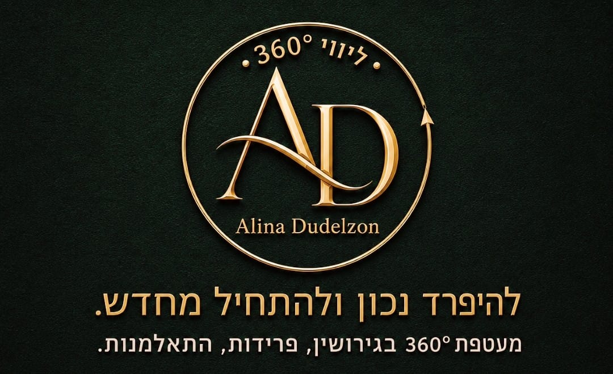
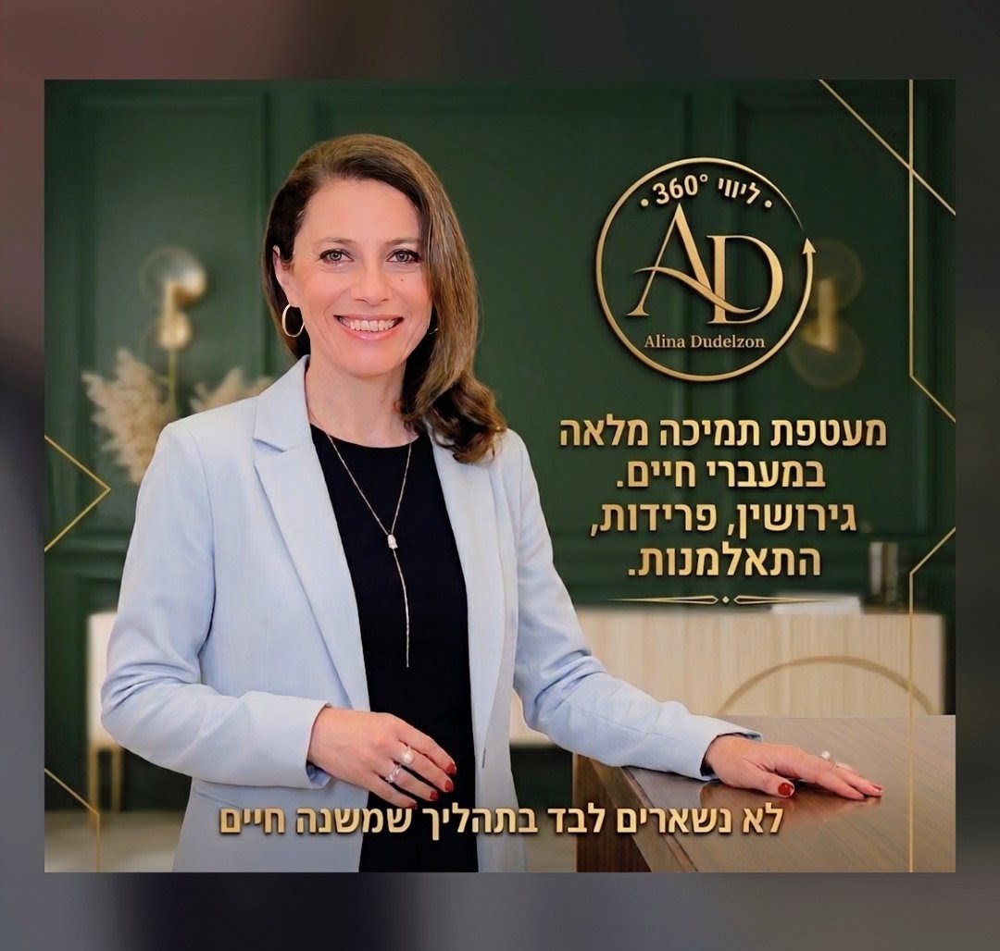
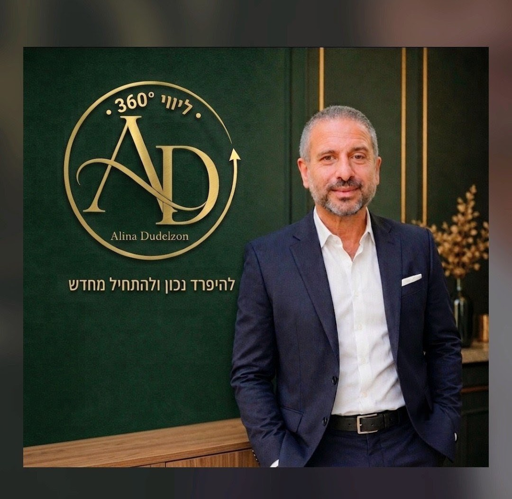
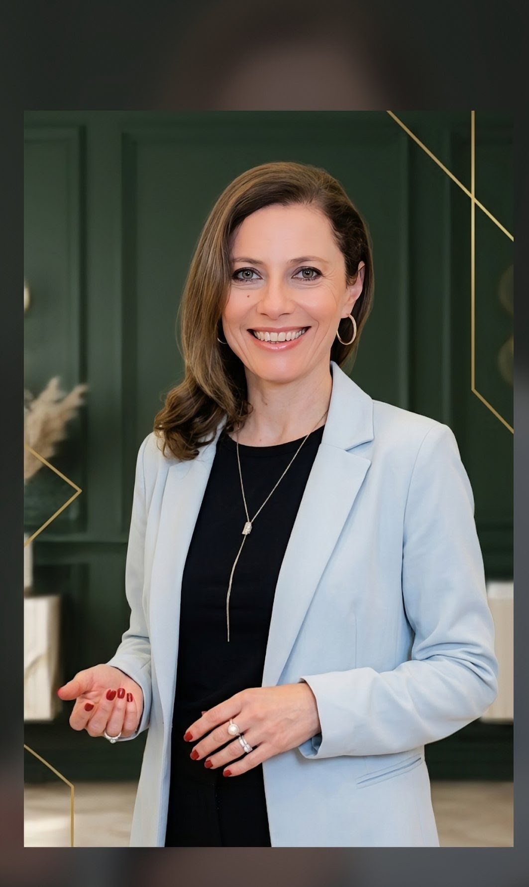
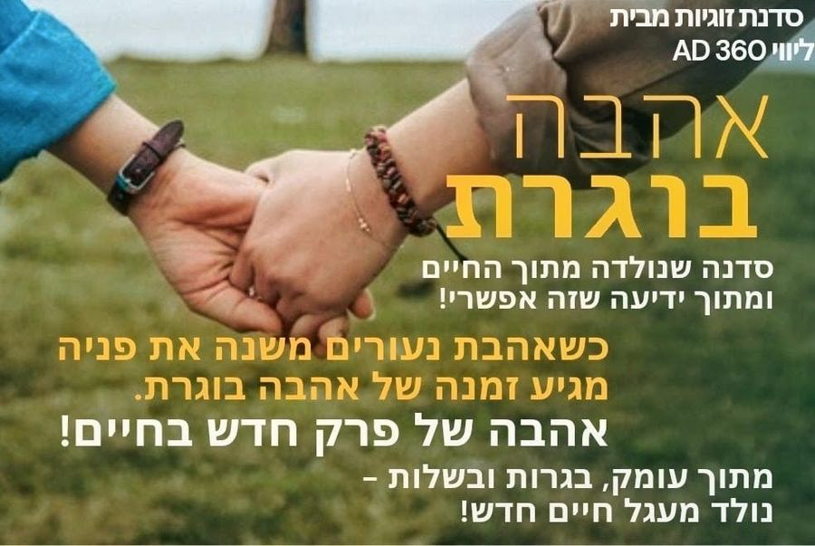
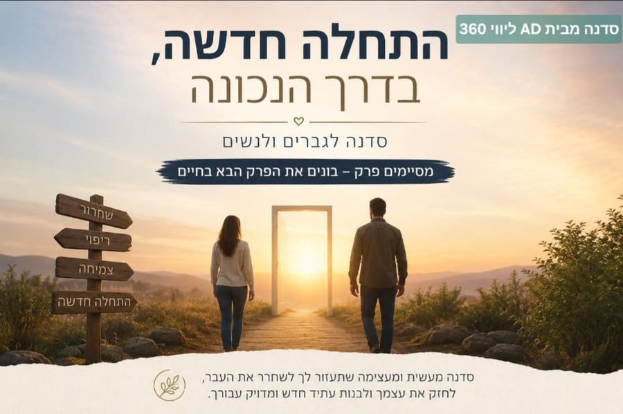
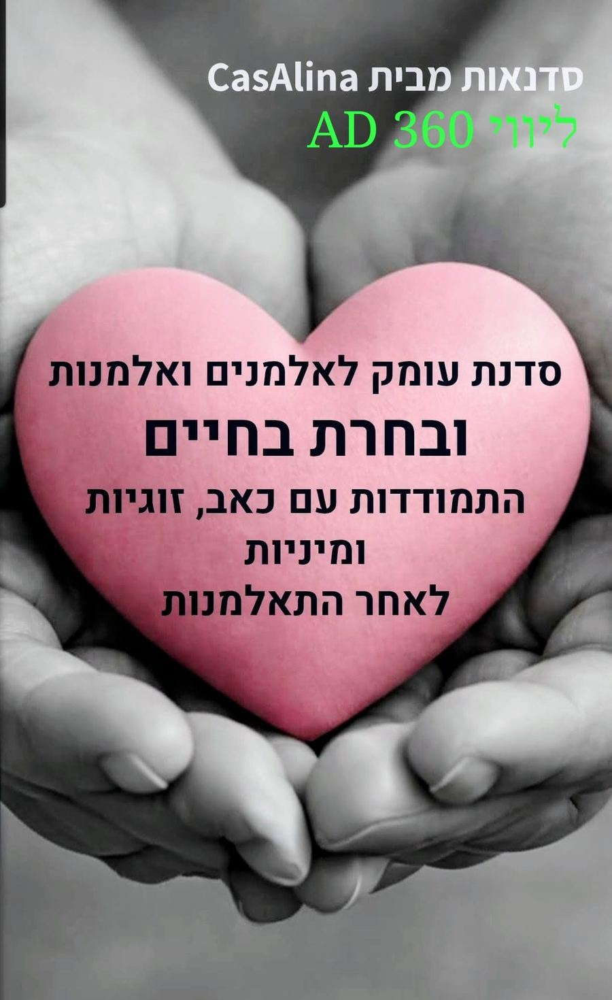
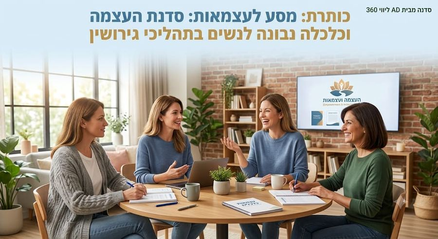

להיפרד נכון
ולהתחיל מחדש
מעטפת רגשית, כלכלית, משפטית —
כי לא נשארים לבד בתהליך שמשנה חיים.


ארבעה עולמות, תמיכה אחת
רואים את התמונה המלאה. אנחנו כאן בכל הממדים ומלווים אתכם כלכלית, משפטית ורגשית לאורך כל הדרך.
ליווי רגשי קרוב המעניק כלים להתמודדות עם המשבר, הפחתת התנגדויות וניקוי מטענים רגשיים. ניהול מתחים והפחתת תחושת הבדידות.
מיפוי נכסים והתחייבויות, עריכת תקציב של הכנסות והוצאות ובניית תקציב מותאם למציאות החדשה. בניית עקרונות הוגנים לחלוקת הרכוש ודמי מזונות.
ניהול תהליך גישור חכם ומקצועי, הובלה להסכם משפטי תוך חתירה להגינות ושמירה מליאה על הזכויות של כל אחד מהצדדים.
הדרכה הורית, שמירה על עולמו הפנימי של הילד וליווי בסוגיות ניכור הורי.
הצוות שמאחורי השיטה
אנשים שחוו את המורכבות הזו מקרוב — ובחרו לעזור לאחרים לעבור אותה בדרך טובה יותר.
מגשרת זוגית בעלת ותק של 15 שנה, מנחה למיניות בריאה, חוקרת, יזמית ומרצה. מאמנת מנטלית התנהגותית ומלווה בתהליכי חיבור גוף, נפש ורוח.
כאמא, כאישה וכבת שחוותה גירושין בעצמה ושל הוריה, וכאשת מקצוע שמלווה זוגות רבים בתהליכי פרידה שונים, הגעתי להבנה עמוקה של המחיר הרגשי, הכלכלי והמשפטי שגובים מאבקי גירושין ממושכים. מתוך הכאב הזה פיתחתי את שיטת ליווי 360°, מתמחה בניכור הורי.
רואה חשבון ובעל MBA במינהל עסקים ומימון, יועץ עסקי ומאמן אישי. מביא ניסיון עשיר בניתוח כלכלי, תכנון פיננסי ובניית בסיס יציב לחיים החדשים.
עודד מלווה את הצד הכלכלי של התהליך — ממיפוי נכסים והתחייבויות, דרך ניתוח תזרים מזומנים ועד לבניית הסכמות כלכליות הוגנות.

צוות מומחים לדיני משפחה, מיסוי, צוואות וייפוי כוח מתמשך. מתמחים בבניית הסכמי גירושין יציבים ומקיפים שמגנים על הזכויות של כל הצדדים.
הצוות המשפטי מוביל את ניסוח ההסכם הסופי, תוך שיתוף פעולה הדוק עם כל שאר חברי הצוות — לתוצאה שמשרתת את טובת כל המשפחה.

איך נולדה שיטת ליווי 360°?
במהלך השנים פגשנו אנשים רבים שנכנסו לתהליך הגירושין מתוך כאב, כעס, אכזבה ופחד. ראינו כיצד דווקא ברגעים הרגישים ביותר בחיים, כשהרגשות מציפים והעתיד נראה מעורפל, מתקבלות החלטות שישפיעו על שנים רבות קדימה.
פגשנו אנשים שוויתרו מתוך אשמה, אחרים שנלחמו מתוך פגיעה, וכאלה שחתמו על הסכמים שלא באמת שיקפו את הצרכים שלהם — רק כדי "לגמור עם זה כבר". אלא שעם הזמן, המטענים הרגשיים לא נעלמו. לעיתים הם עברו אל החיים שאחרי, אל היחסים עם הילדים, אל הקשר עם הגרוש או הגרושה, ואל התחלה חדשה שנשאה איתה כאב, חרטות ותחושת החמצה.
מתוך ההבנה הזו נולדה שיטת ליווי 360°. הבנו שהסכם גירושין הוא לא רק מסמך משפטי, ושייעוץ משפטי לבדו אינו מספיק. כדי להגיע להסכם נכון ויציב, נדרשת קודם כל בשלות רגשית — היכולת לקבל החלטות מתוך בהירות, אחריות וראייה של העתיד, ולא מתוך סערת הרגע.
לכן יצרנו תהליך המשלב בין ליווי רגשי, ייעוץ כלכלי והכוונה משפטית, מתוך ראייה הוליסטית של האדם, המשפחה והחיים שאחרי. אנחנו מאמינים שהמטרה אינה רק "להגיע להסכם", אלא לסיים נכון את הפרק הנוכחי — כדי לא לקחת אל הפרק הבא מטענים רגשיים, ויתורים מיותרים או השלכות של החלטות שנעשו מתוך כאב.
כי פרידה ראויה היא תוצאה של בשלות רגשית.
ולפני שבונים הסכם — צריך לבנות את היכולת להגיע אליו.
זו בדיוק המהות של ליווי 360°: לא רק לסיים את הפרידה, אלא להכין את הקרקע להתחלה חדשה — בריאה יותר, שקולה יותר ומיטיבה יותר.
שיטת ליווי 360° נולדה מתוך ההבנה שאנשים לא מתחרטים על הגירושין עצמם — הם מתחרטים על הדרך שבה עברו אותם ועל ההחלטות שקיבלו כשהכאב ניהל אותם. אנחנו כאן כדי לעזור לכם לקבל החלטות שתהיו שלמים איתן גם בהמשך הדרך.
בכל שלב שאתם — אנחנו כאן
בין אם אתם בתחילתו או בעיצומו של תהליך הגירושין ובין אם כבר נפרדתם ומחפשים יציבות.
המסלול המקיף ביותר, המעניק מעטפת רגשית, כלכלית ומשפטית מלאה, מתוך הבנה שהסכם טוב הוא רק תחילת הדרך.
- ליווי רגשי ואימון מנטלי להגעה להסכמות מתוך בשלות רגשית
- פגישות עם עורך דין וייעוץ משפטי מקצועי
- ייעוץ ותכנון כלכלי לקראת החיים החדשים
- בניית הסכם יציב ומותאם לצורכי המשפחה
- הכנה לפרק החדש בחיים – אישי, משפחתי וכלכלי
- ליווי ותמיכה במהלך השנה הראשונה לאחר הפרידה
- התמודדות עם ניכור הורי
- פרידה מנרקיסיסט/ית
מסלול ממוקד עבור זוגות המעוניינים להגיע להסכם גירושין מתוך שיתוף פעולה, תוך שילוב ההיבטים הרגשיים, המשפטיים והכלכליים הנדרשים לתהליך.
- אימון מנטלי וליווי רגשי לקראת קבלת החלטות
- פגישות עם עורך דין וייעוץ משפטי
- ייעוץ כלכלי בהתאם לצורך
- בניית הסכם גירושין מתוך ראייה ארוכת טווח
פגישות ייעוץ אישיות המותאמות לצורך הספציפי שלכם, במטרה לסייע בקבלת החלטות, בהבנת האפשרויות וביצירת סדר בתוך תקופה מורכבת.
- פגישת ייעוץ אישית או זוגית
- מענה לסוגיות רגשיות, כלכליות או תהליכיות
- הכוונה מקצועית לקבלת החלטות מושכלות
- אפשרות לליווי ממוקד בהתאם לצורך
מטרת הליווי היא לאפשר לכם לעבור מהישרדות לחיים עם משמעות, ביטחון ותקווה, תוך כבוד לסיפור החיים ולזיכרון של בן או בת הזוג.
- הקשבה, תמיכה וליווי אישי
- סיוע בעיבוד האובדן והתמודדות עם השכול
- חיזוק החוסן הרגשי והביטחון העצמי
- התמודדות עם הבדידות ובניית שגרה חדשה ומאוזנת
- ליווי בקבלת החלטות אישיות ומשפחתיות
- התמודדות עם אתגרים כלכליים, מעשיים וסוגיות משפטיות
- חיבור מחדש למשמעות, תקווה ושמחת חיים
- הכנה הדרגתית לפתיחת פרק חדש, בקצב שמתאים לכם
- מיניות לאחר התאלמנות
המסלול המקיף והמלא הכולל ליווי ותמיכה רגשית, כלכלית ומשפטית, כולל ייצוג במשא ומתן מול הייצוג של בן/בת הזוג.
- ליווי רגשי ואימון מנטלי בתהליך
- פגישות עם עורך דין וייעוץ משפטי מקצועי
- ייצוג מקצועי במו"מ עד הגעה להסכם
- ייעוץ ותכנון כלכלי לקראת החיים החדשים
- הכנה לפרק החדש בחיים – אישי, משפחתי וכלכלי
- ליווי ותמיכה במהלך השנה הראשונה לאחר הפרידה
- התמודדות עם ניכור הורי
המסלול המקיף מעניק לכם לא רק הסכם טוב, אלא גם את הכלים והליווי שיאפשרו להתחיל מחדש בביטחון, לחסוך מאבקים מיותרים ולהימנע מטעויות יקרות בהמשך הדרך.
זו השקעה שמחזירה את עצמה בשקט, בזמן ובאיכות החיים של השנים הבאות.
השוואה בין ליווי 360° לבין הליך הגירושין המסורתי
סדנאות
מרחב ללמידה ולצמיחה, לצד מעטפת הליווי המלאה. כאן יתווספו בעתיד מוצרים וסדנאות נוספים.

סדנה לבניית מערכת יחסים בריאה ובוגרת, לקראת הפרק הבא בחיים.

סדנה שמעניקה כישורי חיים לקראת פרק חדש יציב ומיטיב.

מרחב תמיכה ייעודי להתמודדות עם אובדן ובניית פרק חדש בחיים.

קבלי את הכלים, הידע והביטחון לבנות את עתידך הכלכלי, לפתח מיומנויות חיים חיוניות ולצמוח מתוך השינוי לחיים מלאי משמעות ועצמאות.
מאמרים
מחשבות, תובנות וסיפורים מהשטח בנושאי זוגיות, פרידה וגירושין.
צוות מקצועי של מומחים לרשותכם
תחת קורת גג אחד צוות מקצועי ממגוון תחומים שמשתף פעולה ומגויס עבורכם להצלחת התהליך כולו.
מסייעים לזוגות להגיע להסכמות בדרך של כבוד הדדי ותקשורת בונה.
מלווים כל אחד ואחת דרך המשברים הרגשיים לעבר כוח וחוסן. ליווי אישי, משפחתי והדרכת הורים.
מחשב, מנתח ומייעץ בכל הקשור לחלוקת רכוש, דמי מזונות ואקטואריה.
מוביל את ההיבטים המשפטיים ומאפשר הסכמות מהירות וחכמות.
הכל — בחבילה אחת
זוגות יחד או לחוד. אנחנו עוזרים לכם להיפרד בטוב ונכון, תוך מזעור נזקים רגשיים וכלכליים לכל הצדדים — כולל הילדים.
הדרכה ללא עלות
מוכנים לעשות את הצעד?
פגישת ההיכרות היא ללא עלות וללא התחייבות.
רק שיחה, בנינו ובאנושיות.
נחזור אליכם תוך 24 שעות · שיחה ראשונה ללא עלות